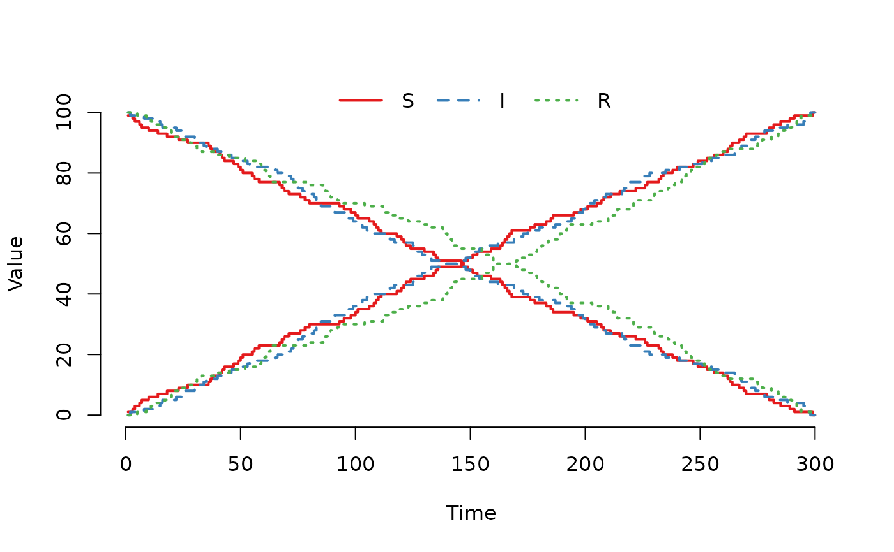
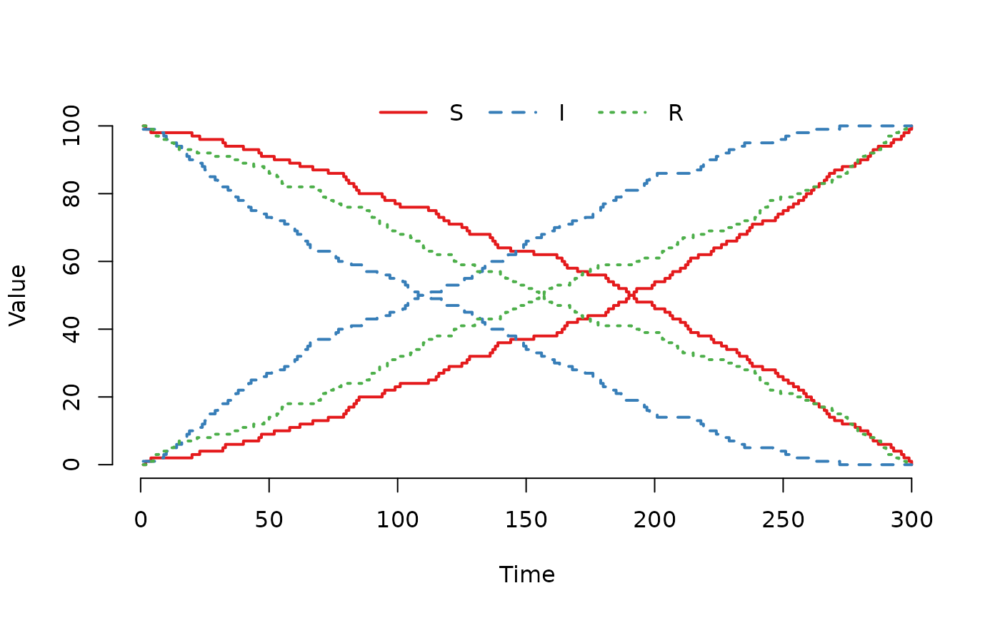
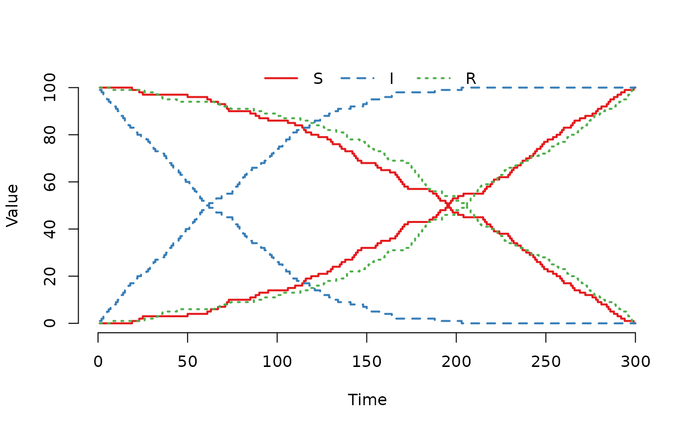
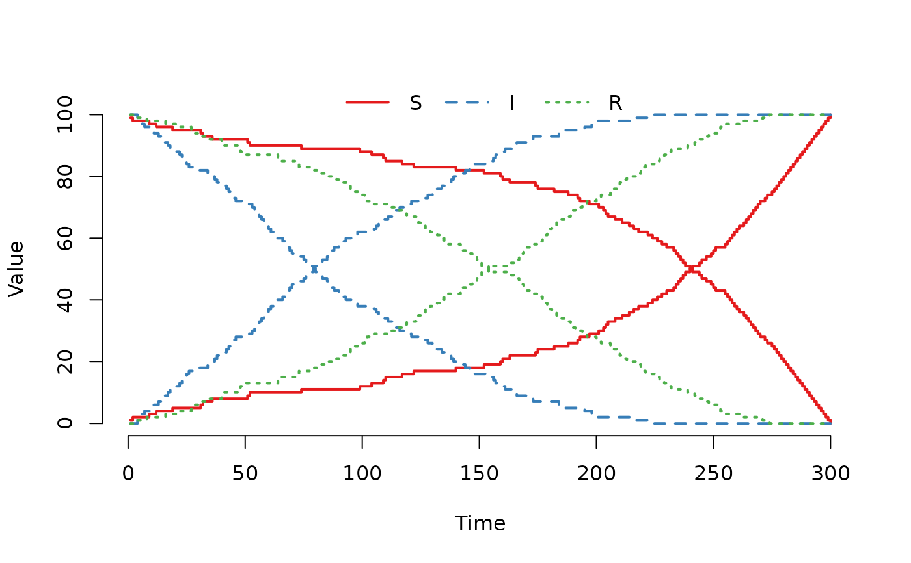

The argument events must be a data.frame with the following
columns:
- event
Four event types are supported by the current solvers: exit, enter, internal transfer, and external transfer. When assigning the events, they can either be coded as a numerical value or a character string: exit;
0or'exit', enter;1or'enter', internal transfer;2or'intTrans', and external transfer;3or'extTrans'. Internally in SimInf, the event type is coded as a numerical value.- time
When the event occurs i.e., the event is processed when time is reached in the simulation. Can be either an
integeror aDatevector. ADatevector is coerced to a numeric vector as days, wheret0determines the offset to match the time of the events to the modeltspanvector.- node
The node that the event operates on. Also the source node for an external transfer event. 1 <=
node[i]<= Number of nodes.- dest
The destination node for an external transfer event i.e., individuals are moved from
nodetodest, where 1 <=dest[i]<= Number of nodes. Setevent = 0for the other event types.destis an integer vector.- n
The number of individuals affected by the event. n[i] >= 0.
- proportion
If
n[i]equals zero, the number of individuals affected byevent[i]is calculated by sampling the number of individuals from a binomial distribution using theproportion[i]and the number of individuals in the compartments. Numeric vector. 0 <= proportion[i] <= 1.- select
To process an
event[i], the compartments affected by the event are specified withselect[i]together with the matrixE, whereselect[i]determines which column inEto use. The specific individuals affected by the event are sampled from the compartments corresponding to the non-zero entries in the specified column inE[, select[i]], whereselectis an integer vector.- shift
Determines how individuals in internal transfer and external transfer events are shifted to enter another compartment. The sampled individuals are shifted according to column
shift[i]in matrixNi.e.,N[, shift[i]], whereshiftis an integer vector. See above for a description ofN. Unsued for the other event types.
Arguments
- E
Each row corresponds to one compartment in the model. The non-zero entries in a column indicates the compartments to include in an event. For the exit, internal transfer and external transfer events, a non-zero entry indicate the compartments to sample individuals from. For the enter event, all individuals enter first non-zero compartment.
Eis sparse matrix of classdgCMatrix.- N
Determines how individuals in internal transfer and external transfer events are shifted to enter another compartment. Each row corresponds to one compartment in the model. The values in a column are added to the current compartment of sampled individuals to specify the destination compartment, for example, a value of
1in an entry means that sampled individuals in this compartment are moved to the next compartment. Which column to use for each event is specified by theshiftvector (see below).Nis an integer matrix.- events
A
data.framewith events.- t0
If
events$timeis aDatevector, thent0determines the offset to match the time of the events to the modeltspanvector, see details. Ifevents$timeis a numeric vector, thent0must beNULL.
Examples
## Let us illustrate how movement events can be used to transfer
## individuals from one node to another. Use the built-in SIR
## model and start with 2 nodes where all individuals are in the
## first node (100 per compartment).
u0 <- data.frame(S = c(100, 0), I = c(100, 0), R = c(100, 0))
## Then create 300 movement events to transfer all individuals,
## one per day, from the first node to the second node. Use the
## fourth column in the select matrix where all compartments
## can be sampled with equal weight.
events <- data.frame(event = rep("extTrans", 300),
time = 1:300,
node = 1,
dest = 2,
n = 1,
proportion = 0,
select = 4,
shift = 0)
## Create an SIR model without disease transmission to
## demonstrate the events.
model <- SIR(u0 = u0,
tspan = 1:300,
events = events,
beta = 0,
gamma = 0)
## Run the model and plot the number of individuals in
## the second node. As can be seen in the figure, all
## indivuduals have been moved to the second node when
## t = 300.
plot(run(model), index = 1:2, range = FALSE)

## Let us now double the weight to sample from the 'I'
## compartment and rerun the model.
model@events@E[2, 4] <- 2
plot(run(model), index = 1:2, range = FALSE)

## And much larger weight to sample from the I compartment.
model@events@E[2, 4] <- 10
plot(run(model), index = 1:2, range = FALSE)

## Increase the weight for the R compartment.
model@events@E[3, 4] <- 4
plot(run(model), index = 1:2, range = FALSE)
